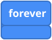
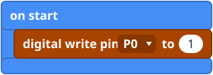
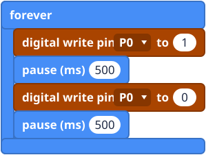
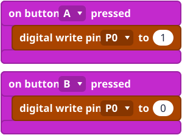

What it is
An LED brick is a little light on a small board, with a cable of three wires. You plug the cable into the breakout board, and a block switches the light on and off.
A pin can send out a 1 (on: send power) or a 0 (off: stop). The block digital write pin does exactly that. The power goes out of the pin, through the LED and back in through the ground wire, the same loop as in the ground box on the introduction page.
Plug it in

- Pin 0: the first plug on the left. The black wire goes on the bottom, black row.
The block starts on pin 0, so with pin 0 you do not have to change anything. Any free pin works (see Pins), as long as the pin in the block matches the pin you plugged into.
The blocks
digital write pin is in the Pins group, under Advanced. forever and pause are in Basic.


Mini examples



Try this
- Make the blink faster, then slower.
- Move the LED to pin 1 and change the pin in the block to match.
- Plug in a second LED on pin 2 and make the two take turns.
- Make A switch it on and B off, then press both quickly.
- Harder: make the LED blink three times when you press A (use repeat from the Loops group).
Common mistakes
- The LED stays off. The pin in the block is not the pin you plugged into.
- Still nothing. Check that the black wire is on the black row. The LED only lights one way round.
- It never seems to blink. Without pause blocks it switches on and off too fast to see.
The code in words
JavaScript: pins.digitalWritePin(DigitalPin.P0, 1)
basic.pause(500)
Python: pins.digital_write_pin(DigitalPin.P0, 1)
basic.pause(500)
V1 and V2
The same on both. Keep away from the pins the lights use (see Pins).
Teacher notes
- Time: about 30 minutes.
- Ideas covered: output, on/off as 1 and 0, and repeating with forever.
- Check: the LED bricks are low voltage and safe to handle. Most problems are a wrong pin or a wire the wrong way round.
- The block pictures are simplified drawings. Check the real blocks in MakeCode.